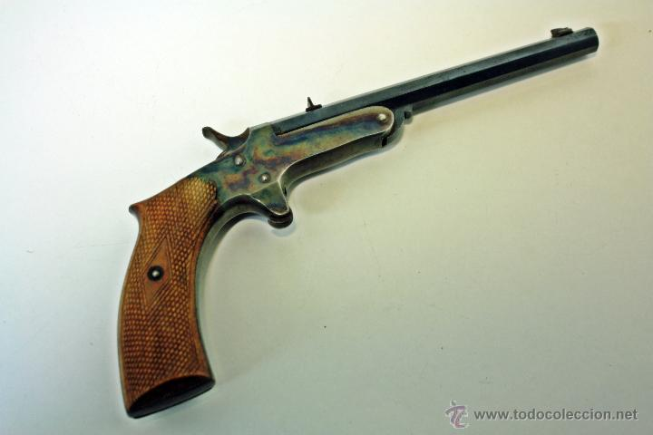
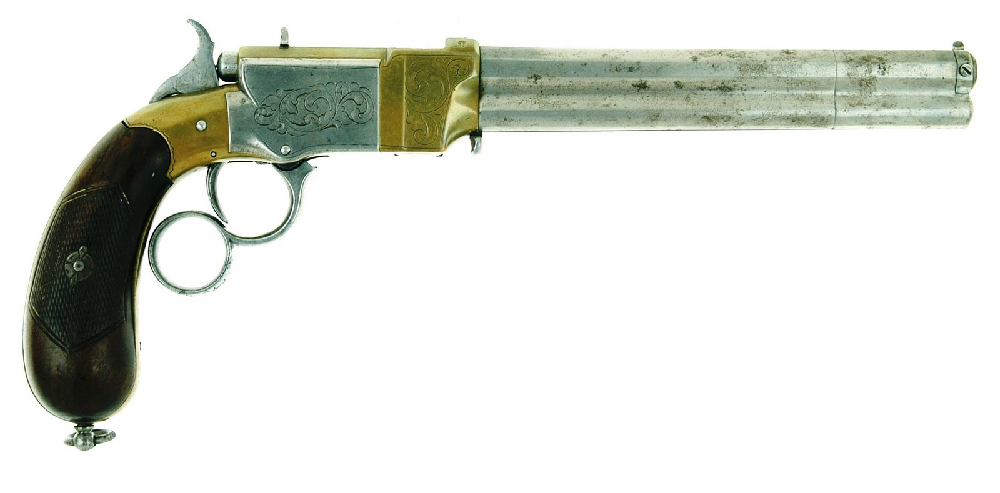
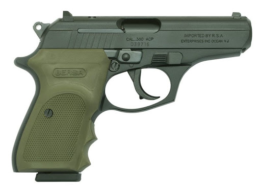

Es el arma de puño de uno o dos cañones de ánima rayada, con su recámara alineada permanentemente con el cañón. La pistola puede ser de carga tiro a tiro, de repetición o semiautomática.
Es el arma de fuego que no teniendo almacén o cargador, obliga al tirador a repetir manualmente la acción completa de carga del arma en cada disparo.
Es el arma de fuego en la que el ciclo de carga y descarga de la recámara se efectúa mecánicamente por acción del tirador, estando acumulados los proyectiles en un almacén cargador.
Es el arma de fuego en la que es necesario oprimir el disparador para cada disparo y en la que el ciclo de carga y descarga se efectúa sin la intervención del tirador.
